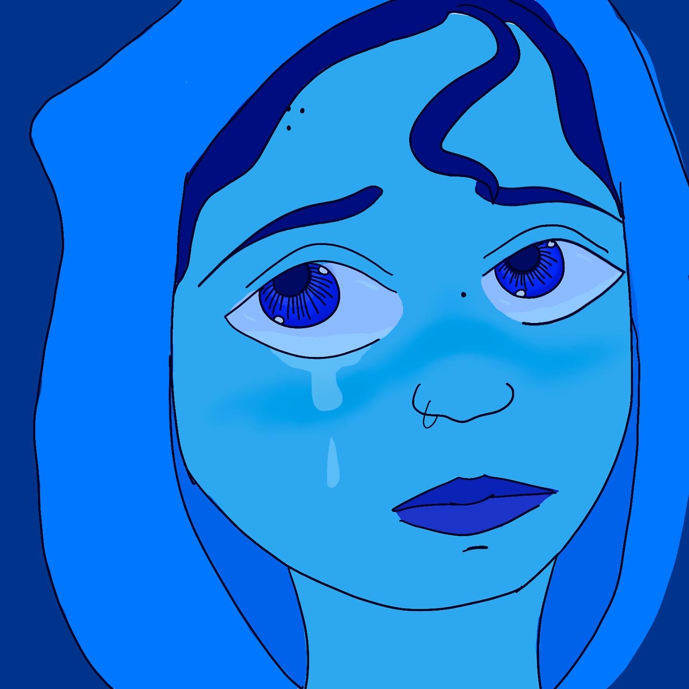

A little bit about me..
I am 25 years young and I'm currently going through the bootcamp for Fullstack Web Development. Before this, I dipped my toe into art from doodling and using Procreate. I have a two-year-old daughter who has the most energy I've ever seen in a child and I wanted to really get into a solid career to give her a better future. I have always been very interested in technology. My last three jobs were regarding tech support for phones and Mac computers.
This is from when I first started drawing. It isn't perfect of course. This one I did on a computer using Photoshop. I didn't have all the talent, but I did have the spirit! I haven't taken any classes for art, I've been teaching myself through YouTube and just jumping in to try something new.
This is from about half way into my art journey. As you can see, I improved on some techniques and kept trying to really get my pictures where I want them to be. I was inspired by a lot of animated movies. When I am inspired, I like to try things right away. Even if I don't have much knowledge yet. Which is why I tried baking for awhile because I do love food and love the science behind making meals and deserts extraordinary.

This is my most recent piece which I think showcases my ability to research and learn different concepts on my own and my determination to try new things and get a deeper understanding on the topic at hand. I feel this does display my willingness to put my all into something I'm interested in.